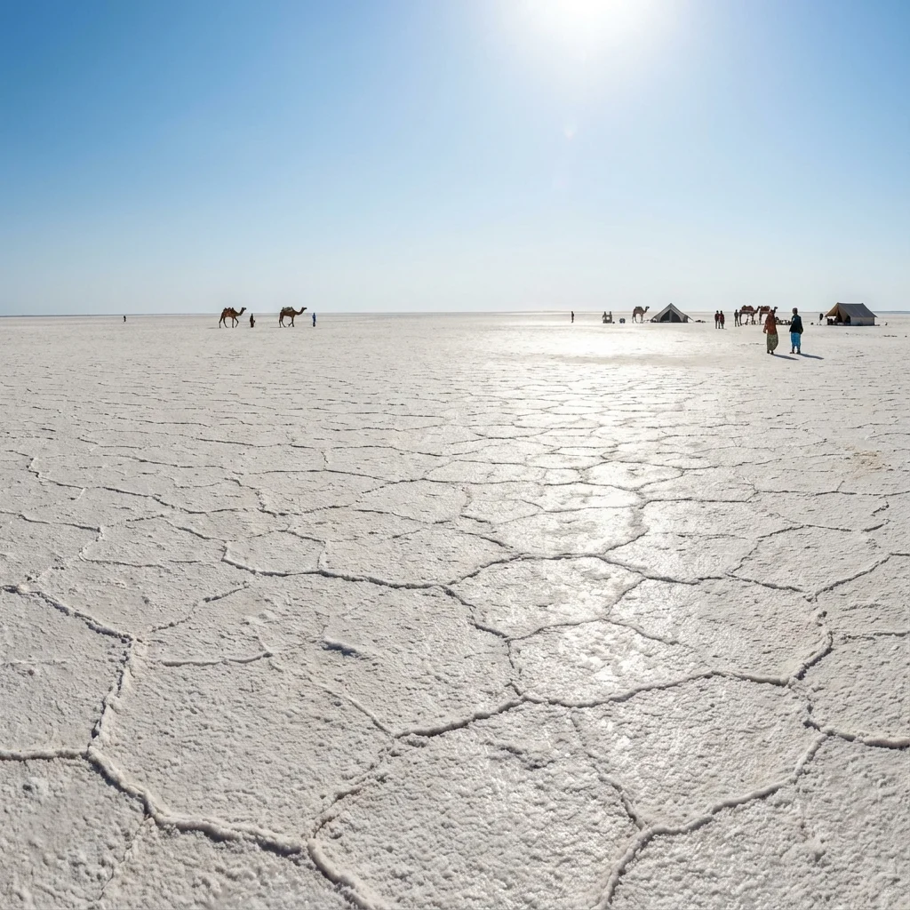
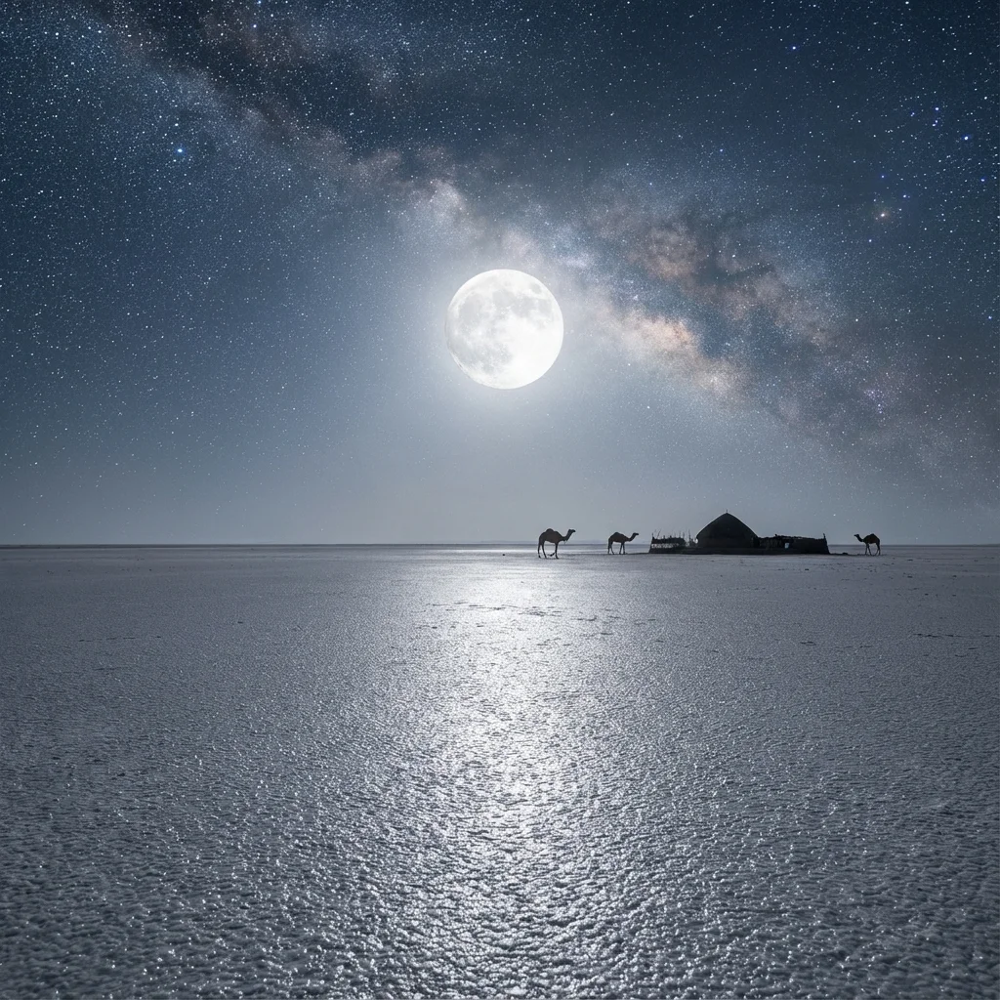
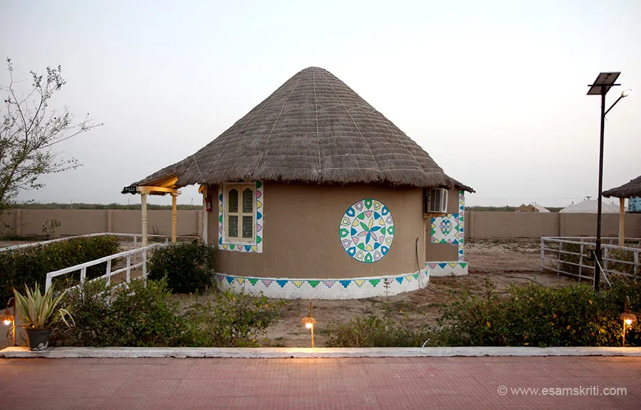
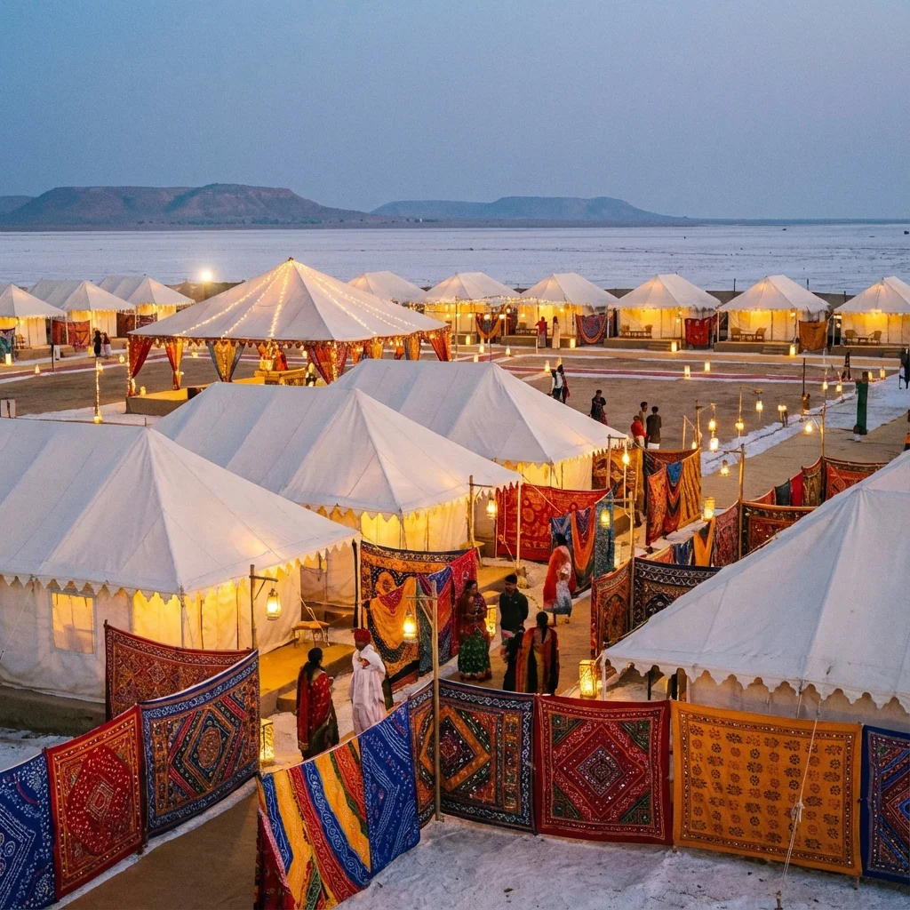
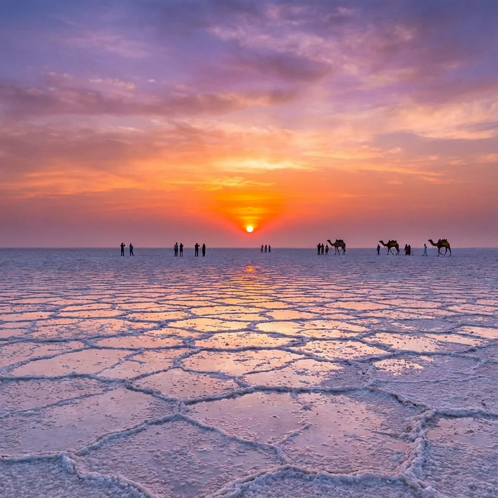

Dhordo is the gateway to the world-famous White Rann of Kutch—a vast salt marsh that transforms into a shimmering surreal landscape under the moonlight. Once a quiet hamlet, it is now the epicenter of the Rann Utsav (Nov-Feb), hosting the magnificent Tent City. Whether you want to witness a sunrise where the salt meets the sky or experience Kutchi culture at its vibrant best, Dhordo is the place to be. It serves as both a destination and a base for exploring the northern desert region.
Who Should Visit
- Photographers: The infinite white horizon offers unique perspective shots.
- Families: The Rann Utsav offers activities like camel cart rides, ATV rides, and cultural shows.
- Couples: Full moon nights on the white desert are incredibly romantic.
- Culture Enthusiasts: A great place to see authentic folk dance, music, and crafts in one place.
How to Reach
- Photographers: The infinite white horizon offers unique perspective shots.
- Families: The Rann Utsav offers activities like camel cart rides, ATV rides, and cultural shows.
- Couples: Full moon nights on the white desert are incredibly romantic.
- Culture Enthusiasts: A great place to see authentic folk dance, music, and crafts in one place.
Landmarks & Heritage
The defining monuments

ImageWhite Rann Viewpoint
(Evening/Morning) Walk on the salt crust. Best visited during Sunrise (6:30-7:30 AM) or Sunset (5:30-6:30 PM) for magical colors.

ImageFull Moon Walk
(Night) If visiting during Full Moon, the desert glows silver. It's a once-in-a-lifetime experience. Open till late night.

ImageRann Utsav Activities
(Evening) Enjoy Paramotoring, ATV rides, and Rifle shooting near the Tent City.

Cultural Shows
(8 PM - 10 PM) Free for Tent City guests, ticketed for others. Witness energetic Garba and Sufi performances.
Magnetic Hill (Kalo Dungar)
(48km away) Combine your trip with the highest point in Kutch.
Curated Local Advice
Timing
Do NOT visit in the afternoon (12-4 PM). The blinding white reflection and heat are unbearable.
Shopping & Bazaars
- Rann Utsav Craft Bazaar: Massive handicraft market during the festival (Nov-Feb). Find authentic Kutchi embroidery, Bandhani, Ajrakh, and leather goods. Prices are higher but quality is assured.
- Hodka Village Market: 15km from Dhordo. Buy directly from artisans at their homes. Famous for mud mirror work (Lippan Kaam) and traditional embroidery.
- Bhirandiyara Market: Small roadside market en route from Bhuj. Good for local snacks, traditional sweets, and basic handicrafts at lower prices.
- Tent City Souvenir Shops: Curated shops within the festival area selling premium handicrafts, textiles, and desert-themed souvenirs.
- Village Cooperatives: Women-run craft cooperatives in nearby villages offering authentic handmade products with fair trade prices.
Local Eats
- Food: The region is strictly vegetarian. Try 'Bajra no Rotlo' with 'Ringan no Olo' at village resorts nearby.
- Crafts: Dhordo and nearby Hodka are famous for 'Mud Work' (Lippan Kaam) and leather embroidery.
- Shopping: The Rann Utsav Craft Bazaar is expensive but has good variety. For better rates, buy from village artisans directly.
When to Visit
November to February (Winter): The BEST time. Rann Utsav is on, weather is pleasant
(10-25°C), and the salt is dry and firm.
October & March: Shoulder season.
It can get hot during the day. Salt might be slightly wet/slushy.
April to September
(Summer/Monsoon): CLOSED/NOT RECOMMENDED. The Rann is flooded with water and extremely
hot. The 'White' look vanishes.
Nearby Places to Visit
Suggested Itinerary
00 PM: Depart from Bhuj. Get permit approved online beforehand.
30 PM: Stop at Bhirandiyara for 'Mava' (sweet) tea.
30 PM: Reach Dhordo. Park vehicle. Enter the White Rann.
30 PM: Enjoy Sunset and photography on the salt flats.
00 PM: Enjoy snacks/dinner at the Rann Utsav food court.
30 PM: Drive back to Bhuj (Arrival by 10 PM).
Location & Gallery


